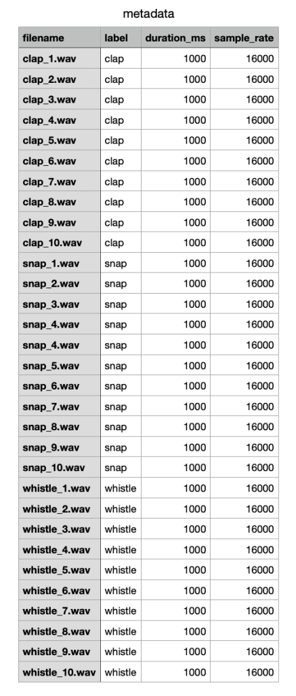

TinyML Audio Interaction & Data Collection
Overview
This project focuses on the foundational stage of the TinyML pipeline: categorical data acquisition. Using an ESP32-S3 microcontroller and a digital PDM microphone, I developed a system to capture, process, and archive a high-quality audio dataset designed for gesture and sound recognition. The objective was to create a robust dataset of 30 samples across three distinct classes: Claps, Snaps, and Whistles.
Hardware Configuration
The system utilises a XIAO ESP32-S3 paired with a capacitive PDM microphone. Unlike analog alternatives, PDM provides a high-frequency, 1-bit digital stream that is highly resistant to electromagnetic interference, ensuring signal integrity during the sampling process.
Data Specifications
To balance audio fidelity with the strict memory constraints of an edge device, the following parameters were implemented:
- Sample Rate: 16,000Hz (16kHz), providing sufficient bandwidth for human-generated sounds while optimizing SRAM usage.
- Bit Depth: 16-bit PCM.
- Format: Standardised WAV files with a 44-byte RIFF header, ensuring compatibility with machine learning training platforms.
- Storage: Automated file management on an SD card, including a
metadata.csvlog for ground-truth labelling.

Methodology: Data Collection & Quality Control
The reliability of a TinyML model is directly tied to the quality of its training data. My collection process followed strict protocols to minimize noise and bias:
- Environmental Consistency: All samples were recorded at a fixed distance of 20-30cm to maintain uniform amplitude.
- Data Cleaning: I implemented a manual verification loop. For instance, when a “snap” sample was corrupted by ambient noise, it was immediately discarded and re-recorded.
- Dataset Diversity: To prevent overfitting, I intentionally introduced slight variations in the intensity and pitch of each gesture, creating a more generalised representation for the model.
Analysis & Critical Reflections
1. System Constraints
The project highlights the severe memory and processing trade-offs in edge computing. At 16kHz, a 1-second mono clip consumes approximately 32KB of buffer space. Doubling the sample rate would have exhausted the available SRAM, illustrating why TinyML necessitates feature-efficient architectures over high-fidelity raw data.
2. Bias and Representation
A critical analysis of datasets like “Google Speech Commands” reveals a bias toward standard accents. This project acknowledges that small-scale datasets are prone to “algorithmic exclusion.” By practicing manual collection, I observed how easily specific demographics (e.g., children or non-native speakers) could be missed, emphasising the need for community-led, diverse data sourcing.
3. Ethics of Edge Sensing
The application of TinyML introduces a significant privacy advantage which is Data Locality. By processing audio directly on the sensor (the “edge”), the system avoids the privacy risks associated with cloud-based surveillance. This enables ethical applications, such as biodiversity monitoring or medical anomaly detection, where the “always-on” nature serves the user rather than data extraction.
4. Future Integration: The ML Pipeline
This dataset represents the first step in a complete TinyML deployment. The next phase involves:
- Digital Signal Processing (DSP): Converting raw waveforms into Spectrograms or MFCCs.
- Model Training: Utilising a Neural Network to classify the spectral patterns.
- Deployment: Quantising the model to run in real-time on the ESP32-S3.